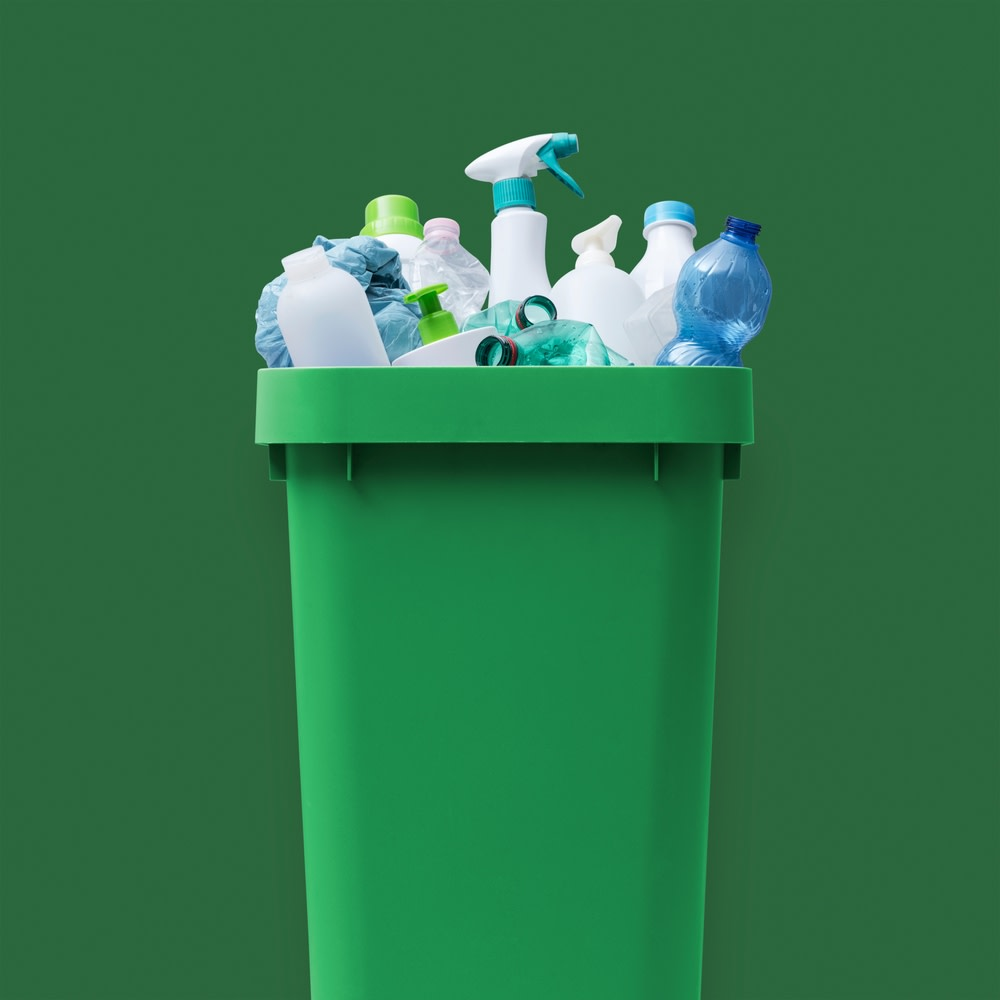

Botol Plastik PET (Polyethylene Terephthalate)
Botol plastik transparan bekas air mineral adalah jenis sampah yang paling mudah untuk didaur ulang kembali menjadi serat kain atau botol baru.

Estimasi Nilai Tukar (Per Kilogram)
| Jenis Plastik | Kondisi Bersih (Rp) | Kondisi Kotor (Rp) |
|---|---|---|
| Botol PET (Air Mineral) | 4.000 | 2.500 |
| Gelas PP (Minuman Kemasan) | 3.500 | 2.000 |